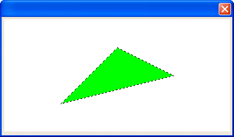

SET_PEN()
Syntax
SET_PEN( Color as C [, Pen_Style as C [, Width as N ] )
SET_PEN( Color_Code as C [, Pen_Style as C [, Width as N ] )
Argument | Description | |||||
Color | A named Alpha Anywhere color. The following standard colors are provided in Alpha Anywhere. | |||||
Aqua Aqua White Black Blue Blue Gray Blue White Bright Green Brown Buttontext Canvas | Dark Blue Dark Green Dark Green Dark Red Dark Rose Dark Tan Dark Teal Dark Yellow Dirty White Forest green | Gold Gray-25 Gray-40 Gray-50 Gray-80 Green White Indigo Lavendar Light Blue Light Green | Light Orange Light Tan Light Turquoise Light Yellow Lime Off White Olive Green Orange | Pale Blue Pale YellowPink Pink White Plum Red Rose Sea Green Sky Blue Tan Teal | Turquoise Violet White Win3D Winback Wintext Yellow Yellow White | |
Color_Code | The RGB code for the color in the format "#R,G,B", where R, G and B are integers between 0 and 255. | |||||
Pen_Style | Optional. Default = "Solid". Values may be:
| |||||
Width | Optional. Default = 1. The thickness of the line in pixels. | |||||
Description
The SET_PEN() function sets the line and border color, style, and thickness.

Limitations
Used only in the Code sections of UI_BITMAP_DRAW(), UI_SCREEN_DRAW(), and UI_PRINTER_DRAW().
Example
ui_bitmap_create("test", 4, 2) ui_bitmap_draw("test",<<%code% inner_Rect(0, 0, 4, 2) set_brush("green") set_pen("black", "Dot", 1) start_poly(2, .5) lineto(3, 1) lineto(1, 1.5) fill_poly(2, .5) %code%) ui_dlg_box("","{image=test}") |
See Also